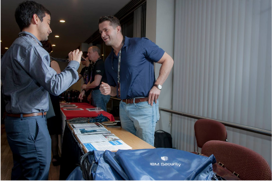

# Western Region Cybersecurity Defense Competition (WRCCDC)
A Blue Teaming competition organized across US. Competitors are asked to perform different bussiness tasks like creating a FTP Server, Scanning the network, adding a domain user, while being attacker by Red Team (Skilled Hackers). The competition is divided into 10 regions, e.g., Western, Mid West. Winning team from each region participates in National Cybersecurity Defense Competition (NCCDC)

The competition tests varied set of debugging, troubleshooting skills of participants, one of the task in WRCCDC 2018 was finding and fixing security flaw which triggered alarm in a Chemical Plant.
Students also get a chance to participate in recruitment mixer, where companies like IBM Security, Raytheon, OWASP, Palo Alto and government agencies accept resume for open job and internship applications.
